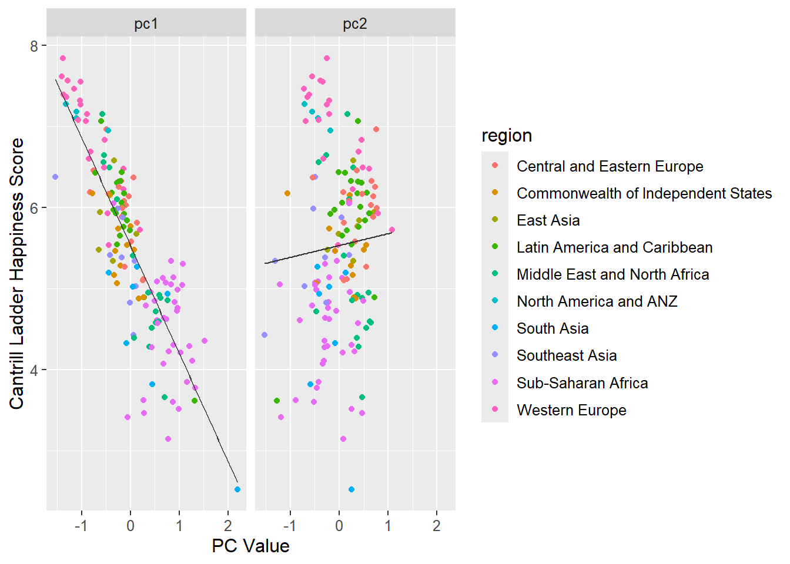

Demonstration 2: Principal Component Analysis in R
For the tasks below, you will require the World Happiness Report (2021) dataset.
Click here to download the file:
world_happiness_report_2021.csv .
Remember to place your data file in a separate subfolder within your R project working directory.
Prior to beginning the practical, you will be required install two packages easyCODA and janitor.
Preprocess the world happiness report data
happy <-
read_csv(
file = "data/world_happiness_report_2021.csv",
show_col_types = FALSE
) |>
clean_names()
happy_standardized <-
happy |>
select(
social = social_support,
life = healthy_life_expectancy,
choices = freedom_to_make_life_choices,
generosity,
corruption = perceptions_of_corruption
) |>
scale()
rownames(happy_standardized) <- happy$country_nameProfile the happiness data
## # A tibble: 6 × 20
## country_name regional_indicator ladder_score standard_error_of_ladder_score
## <chr> <chr> <dbl> <dbl>
## 1 Finland Western Europe 7.84 0.032
## 2 Denmark Western Europe 7.62 0.035
## 3 Switzerland Western Europe 7.57 0.036
## 4 Iceland Western Europe 7.55 0.059
## 5 Netherlands Western Europe 7.46 0.027
## 6 Norway Western Europe 7.39 0.035
## # ℹ 16 more variables: upperwhisker <dbl>, lowerwhisker <dbl>,
## # logged_gdp_per_capita <dbl>, social_support <dbl>,
## # healthy_life_expectancy <dbl>, freedom_to_make_life_choices <dbl>,
## # generosity <dbl>, perceptions_of_corruption <dbl>,
## # ladder_score_in_dystopia <dbl>, explained_by_log_gdp_per_capita <dbl>,
## # explained_by_social_support <dbl>,
## # explained_by_healthy_life_expectancy <dbl>, …Plot happiness score against feature
happy |>
select(
ladder = ladder_score,
social = social_support,
life = healthy_life_expectancy,
choices = freedom_to_make_life_choices,
generosity,
corruption = perceptions_of_corruption
) |>
pivot_longer(-ladder, names_to = "feature", values_to = "value") |>
ggplot(aes(value, ladder)) +
geom_point(alpha = 0.4) +
scale_x_continuous("Feature value") +
scale_y_continuous("Cantrill Ladder happiness score") +
facet_wrap(~ feature, scales = "free_x")
Run PCA using five features
##
## Principal inertias (eigenvalues):
##
## dim value % cum% scree plot
## 1 0.466493 47.0 47.0 ************
## 2 0.243482 24.5 71.5 ******
## 3 0.139560 14.1 85.5 ****
## 4 0.095018 9.6 95.1 **
## 5 0.048735 4.9 100.0 *
## -------- -----
## Total: 0.993289 100.0
##
##
## Rows:
## name mass qlt inr k=1 cor ctr k=2 cor ctr
## 1 | Fnln | 7 707 19 | -1378 683 27 | -257 24 2 |
## 2 | Dnmr | 7 808 19 | -1403 699 28 | -553 109 8 |
## 3 | Swtz | 7 860 14 | -1281 789 24 | -384 71 4 |
## 4 | Icln | 7 817 10 | -1021 738 15 | -334 79 3 |
## 5 | Nthr | 7 929 13 | -1149 667 19 | -719 261 14 |
## 6 | Nrwy | 7 918 17 | -1366 763 27 | -615 155 10 |
## 7 | Swdn | 7 871 16 | -1303 699 24 | -647 172 12 |
## 8 | Lxmb | 7 834 9 | -1030 803 15 | -201 30 1 |
## 9 | NwZl | 7 890 17 | -1322 689 25 | -713 201 14 |
## 10 | Austr | 7 973 8 | -1022 919 15 | -247 54 2 |
## 11 | Astrl | 7 958 11 | -1104 765 18 | -554 193 8 |
## 12 | Isrl | 7 615 4 | -569 563 5 | 173 52 1 |
## 13 | Grmn | 7 888 6 | -882 842 11 | -206 46 1 |
## 14 | Cand | 7 951 10 | -1099 824 17 | -433 128 5 |
## 15 | Irln | 7 867 10 | -1070 750 16 | -422 116 5 |
## 16 | CstR | 7 695 5 | -602 495 5 | 383 200 4 |
## 17 | UntK | 7 856 10 | -914 548 12 | -685 308 13 |
## 18 | CzcR | 7 885 6 | -493 261 3 | 763 624 16 |
## 19 | UntS | 7 665 2 | -456 572 3 | -184 93 1 |
## 20 | Blgm | 7 864 4 | -522 483 4 | 463 381 6 |
## 21 | Frnc | 7 890 6 | -812 717 9 | 399 173 4 |
## 22 | Bhrn | 7 717 3 | -533 573 4 | -267 144 2 |
## 23 | Malt | 7 873 6 | -847 759 10 | -328 114 3 |
## 24 | TwPC | 7 883 2 | -338 506 2 | 292 377 2 |
## 25 | UnAE | 7 919 4 | -555 578 4 | -427 342 5 |
## 26 | SdAr | 7 707 3 | -431 485 3 | 291 222 2 |
## 27 | Span | 7 762 5 | -531 418 4 | 482 345 6 |
## 28 | Itly | 7 552 5 | -140 27 0 | 613 525 10 |
## 29 | Slvn | 7 747 6 | -754 606 8 | 364 142 4 |
## 30 | Gtml | 7 139 2 | -175 138 0 | -16 1 0 |
## 31 | Urgy | 7 893 4 | -721 870 7 | 117 23 0 |
## 32 | Sngp | 7 710 25 | -1535 644 34 | -491 66 7 |
## 33 | Kosv | 7 307 7 | 62 4 0 | -544 303 8 |
## 34 | Slvk | 7 762 4 | -187 56 1 | 664 706 12 |
## 35 | Brzl | 7 864 1 | -199 344 1 | 244 520 2 |
## 36 | Mexc | 7 646 2 | -240 179 1 | 388 467 4 |
## 37 | Jamc | 7 534 4 | -270 140 1 | 453 394 6 |
## 38 | Lthn | 7 941 4 | -233 85 1 | 736 855 15 |
## 39 | Cypr | 7 214 3 | -138 42 0 | 277 171 2 |
## 40 | Estn | 7 824 6 | -829 815 10 | 85 8 0 |
## 41 | Panm | 7 777 4 | -382 243 2 | 566 534 9 |
## 42 | Uzbk | 7 918 13 | -775 320 9 | -1059 598 31 |
## 43 | Chil | 7 542 2 | -133 61 0 | 373 481 4 |
## 44 | Plnd | 7 959 3 | -442 445 3 | 475 514 6 |
## 45 | Kzkh | 7 584 3 | -411 457 2 | 217 127 1 |
## 46 | Romn | 7 684 5 | -32 1 0 | 699 682 13 |
## 47 | Kuwt | 7 615 1 | -272 395 1 | 203 220 1 |
## 48 | Serb | 7 304 1 | -127 87 0 | 201 217 1 |
## 49 | ElSl | 7 112 2 | -170 102 0 | 55 11 0 |
## 50 | Mrts | 7 601 2 | -343 450 2 | 199 151 1 |
## 51 | Latv | 7 823 4 | -96 18 0 | 650 806 12 |
## 52 | Clmb | 7 733 2 | -162 90 0 | 435 643 5 |
## 53 | Hngr | 7 893 5 | -170 41 0 | 775 852 17 |
## 54 | Thln | 7 283 8 | -262 56 1 | -526 227 8 |
## 55 | Ncrg | 7 982 1 | -350 909 2 | -99 73 0 |
## 56 | Japn | 7 820 7 | -618 351 5 | 715 469 14 |
## 57 | Argn | 7 916 3 | -296 171 1 | 618 745 11 |
## 58 | Prtg | 7 772 7 | -467 199 3 | 791 573 17 |
## 59 | Hndr | 7 227 1 | -130 79 0 | -177 148 1 |
## 60 | Crot | 7 726 5 | -171 41 0 | 703 685 14 |
## 61 | Phlp | 7 75 2 | -154 69 0 | 49 7 0 |
## 62 | SthK | 7 279 4 | -65 7 0 | 409 272 5 |
## 63 | Peru | 7 722 3 | -64 10 0 | 535 711 8 |
## 64 | BsnH | 7 44 4 | 132 29 0 | 97 16 0 |
## 65 | Moldv | 7 446 2 | 6 0 0 | 369 446 4 |
## 66 | Ecdr | 7 600 2 | -146 73 0 | 392 527 4 |
## 67 | Kyrg | 7 137 5 | -250 81 1 | -209 56 1 |
## 68 | Grec | 7 741 11 | 199 24 1 | 1088 717 33 |
## 69 | Bolv | 7 104 2 | -8 0 0 | 153 104 1 |
## 70 | Mngl | 7 28 4 | 129 27 0 | -11 0 0 |
## 71 | Prgy | 7 137 3 | -216 125 1 | 65 11 0 |
## 72 | Mntn | 7 419 2 | 16 1 0 | 320 418 3 |
## 73 | DmnR | 7 614 2 | -270 326 1 | 254 288 2 |
## 74 | NrtC | 7 476 3 | -445 474 3 | -23 1 0 |
## 75 | Blrs | 7 407 5 | -66 6 0 | 552 401 8 |
## 76 | Russ | 7 717 2 | 81 18 0 | 508 699 7 |
## 77 | HKSA | 7 333 10 | -645 293 6 | -237 39 2 |
## 78 | Tjks | 7 404 2 | -314 375 1 | -86 28 0 |
## 79 | Vtnm | 7 432 3 | -415 350 2 | 201 82 1 |
## 80 | Liby | 7 120 1 | 57 29 0 | 99 91 0 |
## 81 | Mlys | 7 263 3 | -179 73 0 | -288 190 2 |
## 82 | Indn | 7 576 20 | 90 3 0 | -1310 574 47 |
## 83 | CngB | 7 812 6 | 832 809 10 | -53 3 0 |
## 84 | Chin | 7 485 3 | -360 291 2 | 294 194 2 |
## 85 | IvrC | 7 840 10 | 1074 781 17 | -295 59 2 |
## 86 | Armn | 7 334 2 | -205 137 1 | 245 197 2 |
## 87 | Nepl | 7 774 2 | 134 66 0 | -441 708 5 |
## 88 | Blgr | 7 597 4 | -118 26 0 | 556 572 9 |
## 89 | Mldvs | 7 516 3 | -444 473 3 | 135 43 1 |
## 90 | Azrb | 7 262 5 | -327 152 2 | 278 110 2 |
## 91 | Cmrn | 7 905 6 | 881 858 11 | -206 47 1 |
## 92 | Sngl | 7 964 3 | 672 958 6 | 54 6 0 |
## 93 | Albn | 7 216 3 | 275 161 1 | 160 55 1 |
## 94 | NrtM | 7 289 2 | 252 254 1 | 93 35 0 |
## 95 | Ghan | 7 781 4 | 546 481 4 | -431 300 5 |
## 96 | Niger | 7 738 7 | 721 506 7 | -488 232 7 |
## 97 | Trkm | 7 202 10 | -268 49 1 | -474 153 6 |
## 98 | Gamb | 7 869 17 | 837 280 10 | -1213 589 41 |
## 99 | Benn | 7 653 14 | 1070 540 16 | -490 113 7 |
## 100 | Laos | 7 738 5 | 109 17 0 | -705 721 14 |
## 101 | Bngl | 7 120 2 | 51 7 0 | -201 113 1 |
## 102 | Guin | 7 991 8 | 964 801 13 | -468 189 6 |
## 103 | SthA | 7 460 3 | 415 361 2 | 218 99 1 |
## 104 | Trky | 7 563 6 | 371 154 2 | 605 409 10 |
## 105 | Pkst | 7 965 5 | 764 748 8 | -412 217 5 |
## 106 | Mrcc | 7 334 10 | 590 239 5 | 372 95 4 |
## 107 | Vnzl | 7 746 5 | 279 97 1 | 721 649 14 |
## 108 | Gerg | 7 211 5 | 272 94 1 | 303 117 3 |
## 109 | Algr | 7 394 10 | 624 252 6 | 468 141 6 |
## 110 | Ukrn | 7 355 3 | 170 73 0 | 333 282 3 |
## 111 | Iraq | 7 921 5 | 766 824 8 | 262 96 2 |
## 112 | Gabn | 7 851 4 | 492 424 3 | 493 427 7 |
## 113 | BrkF | 7 906 7 | 912 857 12 | -217 49 1 |
## 114 | Cmbd | 7 117 4 | -3 0 0 | -269 117 2 |
## 115 | Mzmb | 7 557 5 | 313 134 1 | -555 423 8 |
## 116 | Nigeri | 7 773 9 | 962 731 13 | -232 42 1 |
## 117 | Mali | 7 855 7 | 955 852 13 | -56 3 0 |
## 118 | Iran | 7 417 8 | 522 231 4 | -468 185 6 |
## 119 | Ugnd | 7 755 5 | 687 641 7 | -289 114 2 |
## 120 | Libr | 7 942 4 | 743 874 8 | -207 68 1 |
## 121 | Keny | 7 795 8 | 547 251 4 | -805 544 18 |
## 122 | Tuns | 7 752 7 | 577 343 5 | 630 409 11 |
## 123 | Lbnn | 7 520 9 | 528 205 4 | 654 315 12 |
## 124 | Namb | 7 728 4 | 553 491 4 | 385 238 4 |
## 125 | PlsT | 7 859 4 | 438 330 3 | 554 529 8 |
## 126 | Mynm | 7 857 18 | 64 1 0 | -1526 855 64 |
## 127 | Jrdn | 7 476 2 | 74 20 0 | 357 457 4 |
## 128 | Chad | 7 943 17 | 1519 907 33 | -304 36 3 |
## 129 | SrLn | 7 53 2 | -79 24 0 | -86 29 0 |
## 130 | Swzl | 7 569 10 | 884 525 11 | 256 44 2 |
## 131 | Cmrs | 7 839 12 | 1211 806 21 | -247 33 2 |
## 132 | Egyp | 7 762 3 | 393 381 2 | 392 380 4 |
## 133 | Ethp | 7 923 2 | 440 624 3 | -305 299 3 |
## 134 | Mrtn | 7 610 8 | 789 529 9 | 307 80 3 |
## 135 | Mdgs | 7 797 9 | 1025 793 15 | 71 4 0 |
## 136 | Togo | 7 924 13 | 1272 873 23 | -308 51 3 |
## 137 | Zamb | 7 872 4 | 676 702 7 | -332 169 3 |
## 138 | SrrL | 7 965 11 | 1163 852 19 | -424 113 5 |
## 139 | Indi | 7 538 7 | 452 198 3 | -592 340 10 |
## 140 | Brnd | 7 724 18 | 1323 647 25 | -456 77 6 |
## 141 | Yemn | 7 693 7 | 697 476 7 | 471 217 6 |
## 142 | Tnzn | 7 950 6 | 275 82 1 | -894 868 22 |
## 143 | Hait | 7 876 26 | 1312 450 25 | -1275 426 45 |
## 144 | Malw | 7 721 10 | 869 535 11 | -514 187 7 |
## 145 | Lsth | 7 654 11 | 992 615 14 | 253 40 2 |
## 146 | Btsw | 7 436 5 | 281 116 1 | 466 320 6 |
## 147 | Rwnd | 7 430 22 | -55 1 0 | -1187 429 39 |
## 148 | Zmbb | 7 910 5 | 777 901 9 | 79 9 0 |
## 149 | Afgh | 7 890 37 | 2193 878 69 | 257 12 2 |
##
## Columns:
## name mass qlt inr k=1 cor ctr k=2 cor ctr
## 1 | socl | 200 767 200 | -822 680 290 | 294 87 71 |
## 2 | life | 200 816 200 | -860 744 317 | 268 72 59 |
## 3 | chcs | 200 664 200 | -761 583 248 | -284 81 66 |
## 4 | gnrs | 200 782 200 | 7 0 0 | -881 782 638 |
## 5 | crrp | 200 544 200 | 582 341 145 | 449 203 166 |What is the percentage of variance explained by each principal component?
## [1] 0.46964540 0.24512744 0.14050280 0.09566051 0.04906384What is the cumulative variance explained for each variable?
vexp <- function(feature, df, pca) {
reg_pc1 <- lm(df[, feature] ~ pca$rowpcoord[, 1])
reg_pc1_pc2 <- lm(df[, feature] ~ pca$rowpcoord[, 1] + pca$rowpcoord[, 2])
explained_pc1 <- cor(predict(reg_pc1), df[, feature]) ^ 2
explained_pc1_pc2 <- cor(predict(reg_pc1_pc2), df[, feature]) ^ 2
c(explained_pc1, explained_pc1_pc2)
}var_explained <- sapply(1:5, \(x) vexp(x, happy_standardized, happy_pca))
colnames(var_explained) <- colnames(happy_standardized)
rownames(var_explained) <- c("PC1", "PC2")
t(round(var_explained, 3))## PC1 PC2
## social 0.680 0.767
## life 0.744 0.816
## choices 0.583 0.664
## generosity 0.000 0.782
## corruption 0.341 0.544## PC1 PC2
## 0.470 0.715How do we build a correlation matrix of all variables?
## ladder social life choices generosity corruption
## ladder 1.000 0.757 0.768 0.608 -0.018 -0.421
## social 0.757 1.000 0.723 0.483 -0.115 -0.203
## life 0.768 0.723 1.000 0.461 -0.162 -0.364
## choices 0.608 0.483 0.461 1.000 0.169 -0.401
## generosity -0.018 -0.115 -0.162 0.169 1.000 -0.164
## corruption -0.421 -0.203 -0.364 -0.401 -0.164 1.000Correlations of happiness score with PC1 and PC2
row_principal <- -happy_pca$rowpcoord[, 1:2]
colnames(row_principal) <- c("PC1", "PC2")
round(cor(cbind("ladder" = happy$ladder_score, row_principal)), 3)## ladder PC1 PC2
## ladder 1.000 0.85 -0.067
## PC1 0.850 1.00 0.000
## PC2 -0.067 0.00 1.000Plot first two principal components
row_principal |>
as_tibble() |>
mutate(
region = happy$regional_indicator,
country = happy$country_name
) |>
ggplot(aes(PC1, -PC2, color = region, label = country)) +
geom_hline(yintercept = 0, color = "gray70", linetype = "dashed") +
geom_vline(xintercept = 0, color = "gray70", linetype = "dashed") +
geom_text(size = 3, show.legend = FALSE) +
coord_equal()Regress happiness on the five indicators
happy_standardized_pc <-
happy_standardized |>
as_tibble() |>
mutate(
ladder = happy$ladder_score,
pc1 = happy_pca$rowpcoord[, 1],
pc2 = happy_pca$rowpcoord[, 2],
country = happy$country_name,
region = happy$regional_indicator
)
happiness_full <-
lm(ladder ~ social + life + choices + generosity + corruption,
data = happy_standardized_pc)
summary(happiness_full)##
## Call:
## lm(formula = ladder ~ social + life + choices + generosity +
## corruption, data = happy_standardized_pc)
##
## Residuals:
## Min 1Q Median 3Q Max
## -1.63771 -0.26591 0.02327 0.37120 1.37329
##
## Coefficients:
## Estimate Std. Error t value Pr(>|t|)
## (Intercept) 5.53284 0.04581 120.776 < 2e-16 ***
## social 0.40177 0.06975 5.760 4.96e-08 ***
## life 0.38823 0.07217 5.380 2.98e-07 ***
## choices 0.21977 0.05783 3.801 0.000213 ***
## generosity 0.03033 0.04933 0.615 0.539620
## corruption -0.13599 0.05301 -2.565 0.011343 *
## ---
## Signif. codes: 0 '***' 0.001 '**' 0.01 '*' 0.05 '.' 0.1 ' ' 1
##
## Residual standard error: 0.5592 on 143 degrees of freedom
## Multiple R-squared: 0.738, Adjusted R-squared: 0.7289
## F-statistic: 80.57 on 5 and 143 DF, p-value: < 2.2e-16What is the correlation between observed y and fitted y?
## [1] 0.8590876Visualise happiness against principal components
happy_standardized_pc |>
pivot_longer(
cols = c(pc1, pc2),
names_to = "PC",
values_to = "value"
) |>
ggplot(aes(value, ladder)) +
geom_point(aes(color = region)) +
geom_smooth(
method = "lm",
formula = y ~ x,
linewidth = 0.5,
color = "grey20",
se = FALSE
) +
scale_x_continuous("PC Value") +
scale_y_continuous("Cantrill Ladder Happiness Score") +
facet_wrap(~ PC) +
theme(text = element_text(size = 12))
Regress happiness on first principal component
happiness_reduced <-
lm(formula = ladder ~ pc1, data = happy_standardized_pc)
summary(happiness_reduced)##
## Call:
## lm(formula = ladder ~ pc1, data = happy_standardized_pc)
##
## Residuals:
## Min 1Q Median 3Q Max
## -2.19102 -0.26848 0.06941 0.40025 1.20478
##
## Coefficients:
## Estimate Std. Error t value Pr(>|t|)
## (Intercept) 5.53284 0.04645 119.11 <2e-16 ***
## pc1 -1.33258 0.06801 -19.59 <2e-16 ***
## ---
## Signif. codes: 0 '***' 0.001 '**' 0.01 '*' 0.05 '.' 0.1 ' ' 1
##
## Residual standard error: 0.567 on 147 degrees of freedom
## Multiple R-squared: 0.7231, Adjusted R-squared: 0.7212
## F-statistic: 383.9 on 1 and 147 DF, p-value: < 2.2e-16## [1] 0.8503647üëâ TASK
Now let’s consider PCA using six features. In the example of PCA above, we did not use logged_gdp_per_capita feature for the PCA analysis.
Run PCA using the original five features (ladder, social, life,
choices, corruption) and logged_gdp_per_capita. You may need to do
some preprocessing first.
Your code here
Now regress happiness on the first principal component from your analysis.
Your code here
How does this compare to the previous analysis with five features? Consider here the R^2 value and the correlation between the observed and fitted values.
Your code here